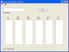

Queue Wait List Display,
com.tymeac.client.TyWlData
This frame class displays the data of an active Queue's Wait Lists.
The non-frame version of this class is TyWlDataClient, below.
 (click to link to full image)
Elements
Queue Name -- Enter a queue name.
Lists -- These are List rows. The top is Wait List 1, the second
is Wait List 2, etc.
In Use -- The number of currently active entries.
Times Used -- The number of times this Wait List was used.
High Used -- The maximum number of requests pending at any one
time. (High water mark.)
Nbr Reset -- The number of requests failed and backed out.
Over Pri -- The number of primary overflows. A request goes into the Wait
List of choice. Priority 1 goes in Wait List 1. When the desired Wait List if full,
the request goes into the next higher Wait List. This is a primary overflow.
Over Sec -- The number of secondary overflows. After a primary overflow,
when the next higher Wait List is also full, the request goes into the following Wait
List. This is a secondary overflow.
Buttons
REFRESH -- Refreshes the display.
Message Block at bottom : -- This is an information message:
Connection failure -- The RMI connection failed or the Tymeac Server returned an
invalid message.
Tymeac shutting down -- Tymeac Server is in shut down mode.
Invalid Queue Name -- The Queue Name does not exist.
Refresh when ready -- As stated.
com.tymeac.client.TyWlDataClient (JavaDoc)
This is the Non-GUI equivalent of the GUI Class, above. An example of how to use this
class is: com.tymeac.demo.TyDemoClient_WLData.java in the
<TymeacHome>source/com/tymeac/demo directory.
Constructor 1 -- has no arguments. This is for the RMI Server. The constructor gets a
new instance of a Tymeac internal class that is similar to TySvrComm
Constructor 2-- is for the internal server. The single argument is the Tymeac
Server Interface, TymeacInterface.
Instance Methods --
public TyWLElements[] refresh(String que) {
Returns the TyWLElements obj. see
the JavaDoc for a description thereof.
Null is not found. (Invalid queue name)
Parameters: the queue name.
| {kind=link}